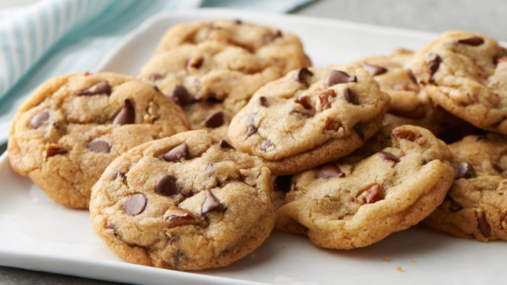
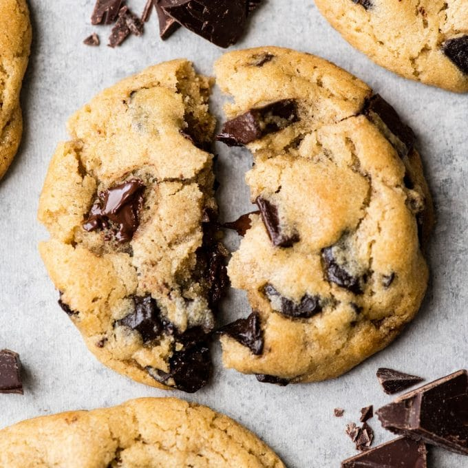

Recept za čokoladne keksiće


Potrebni sastojci:
- 2 šolje brašna
- 1 celo jaje i još jedno žumance
- 1 maslac (125 g)
- 3/4 šolje šećera
- 1 mala kašičica praška za pecivo
- malo vanila ekstrakta
- malo soli
- čokoladne kapljice ili iseckana čokolada 200 g
Priprema:
- Zagrejte rernu na 180C
- Tepsiju ili pleh obložite papirom za pečenje
- Istopite maslac, kada se istopi prebacite ga u hladnu posudu kako bi se prohladio
- Prvo pomešajte suve sastojke ( bez čokolade!), pa im zatim dodajte jaje i istopljen maslac
- Mešajte sastojke tako da dobijete lepljivo testo
- Na kraju dodajte čokoladu u testo
- Na tepsiju pomoću kašike vadite kuglice, pritom ostavljajući par cm između svakog keksa jer će se tokom pečenja malo podići i raširiti.
- Pecite keksiće 15 minuta, ukoliko želite da vam budu zapečeniji pecite ih malo duže
PRIJATNO
VRH